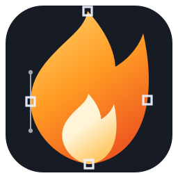

◇
Vector meets bitmap
Build with paths, Bézier curves, shapes, gradients, fills, strokes, bitmap painting, and pixel-selection tools in a shared document.
HYBRID EDITING
FireCraftA modern graphics editor inspired by the classic Fireworks workflow. Bring vector and bitmap editing together, shape ideas quickly, and prepare artwork for the web.
FireCraft brings together the precision of vector design and the flexibility of bitmap editing in a shared, layered desktop-editor workflow.
Build with paths, Bézier curves, shapes, gradients, fills, strokes, bitmap painting, and pixel-selection tools in a shared document.
HYBRID EDITINGWork with layered Fireworks PNG documents and preserve document structure as you edit.
DOCUMENT WORKFLOWImport and export common raster and vector formats, with web-oriented output workflows.
DESIGN FOR THE WEBA shared command registry powers CLI, scripting, browser embedding, journal/replay, and MCP integration.
SCRIPTABLE BY DESIGNA Rust engine, GPU-accelerated interactive canvas, and deterministic CPU reference rendering.
FAST · PORTABLE · OPENFireCraft takes inspiration from the focused, panel-driven creative workspace that made classic web graphics tools productive. The interface is evolving toward that experience, with modern rendering, portability, and automation built in.

FireCraft is free and open source. Download a published build or explore the source and build it yourself.
Release information is loaded from GitHub.
Availability reflects published GitHub release assets—not planned packaging targets. Windows, macOS, and Android builds are not advertised as released unless they appear in the current release.
FireCraft is an independent community project. Read the code, follow development, report issues, suggest improvements, or help shape what comes next.